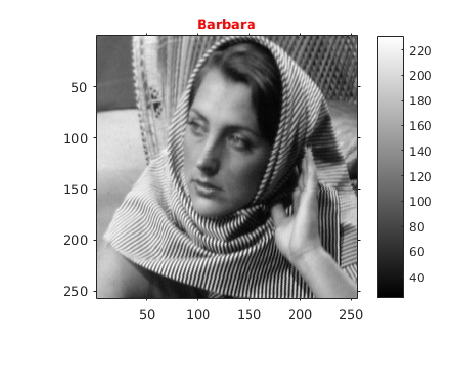
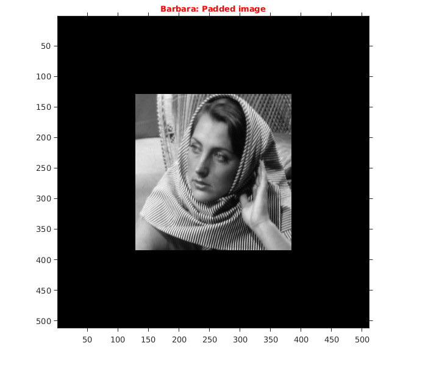
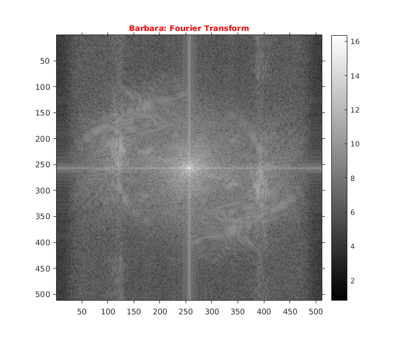
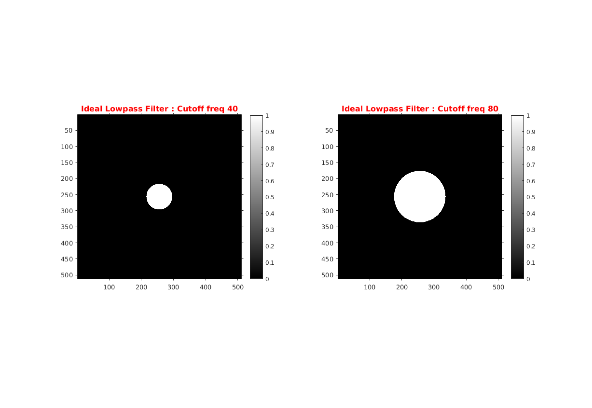
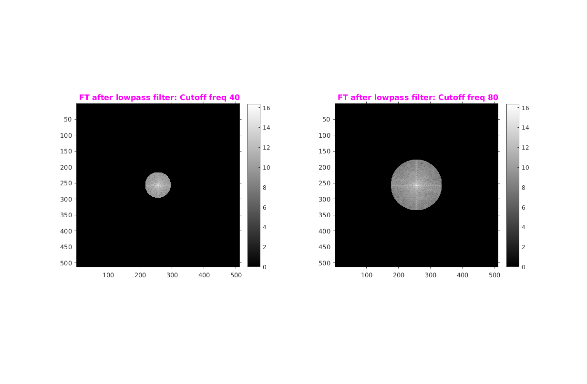
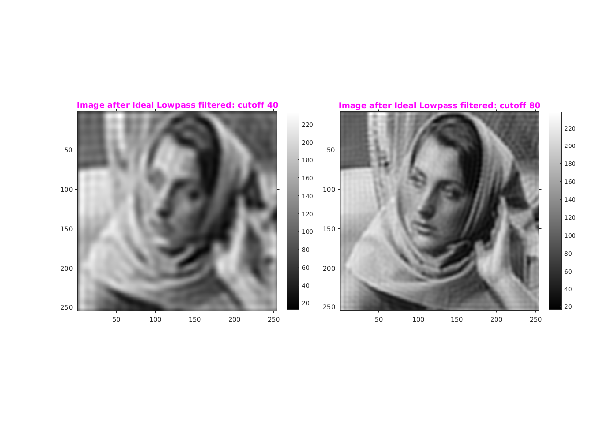
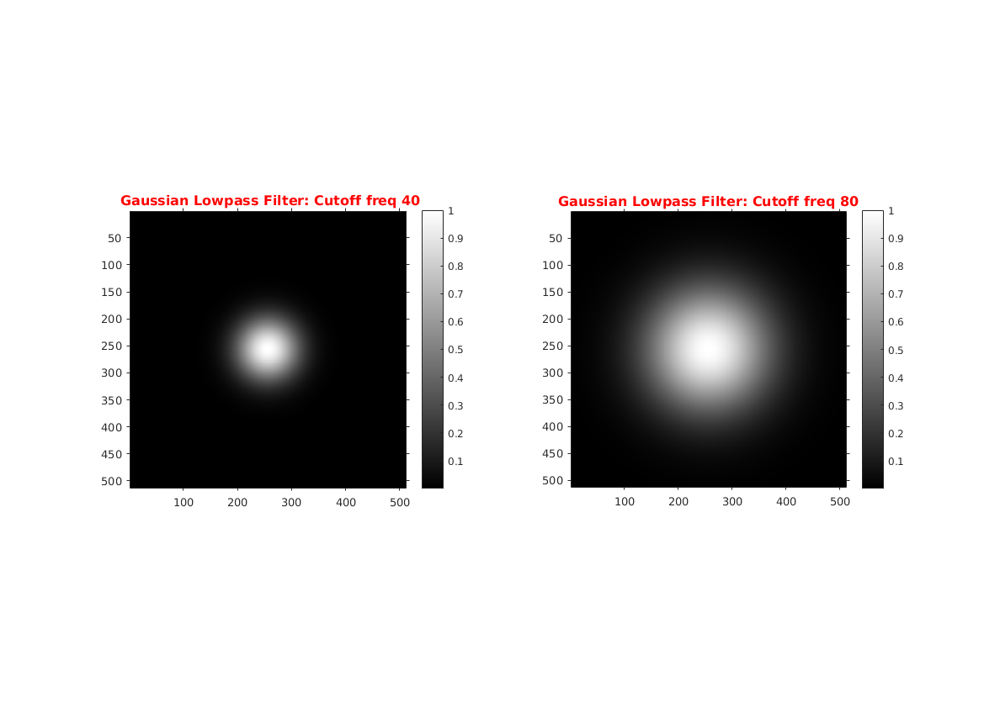
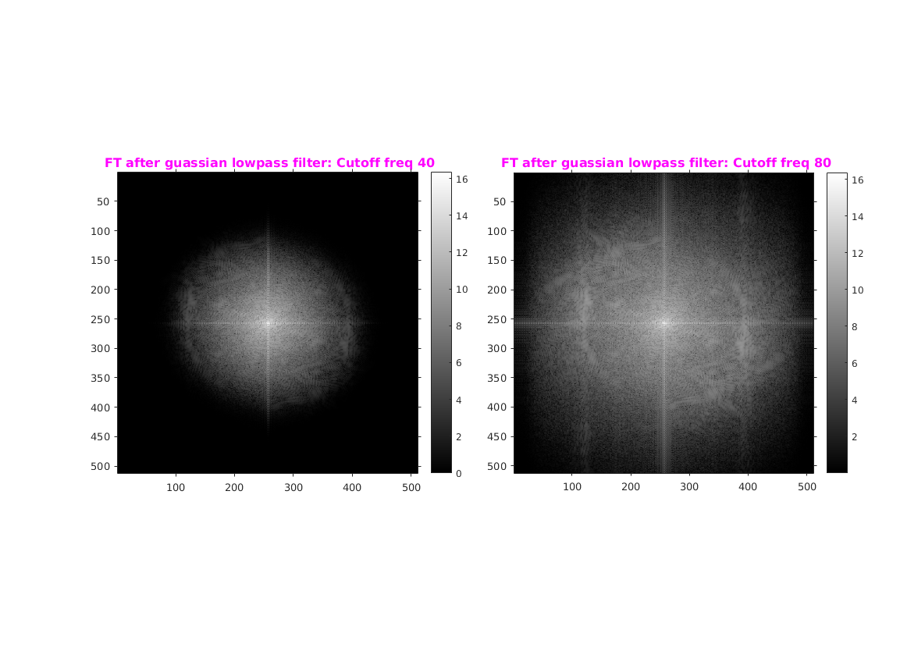
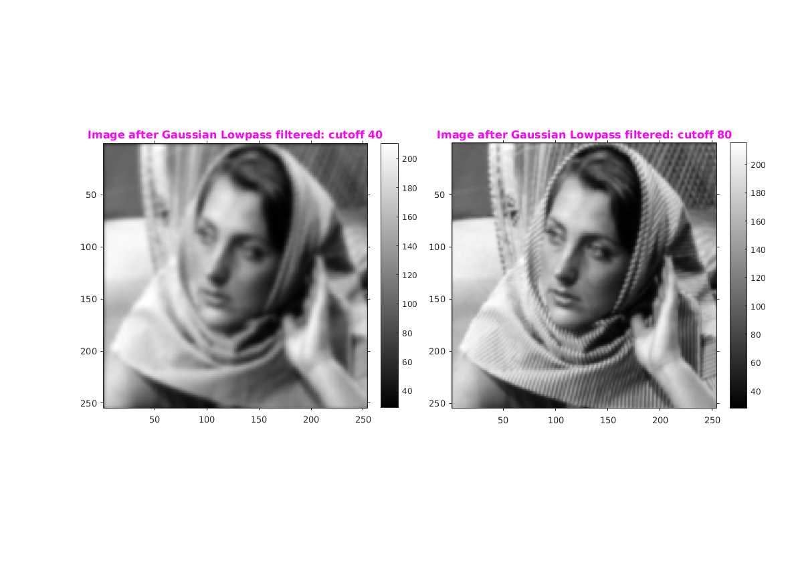

Assignment 5--4
CS-663 Group-163059009, 16305R011
Contents
Low Pass Filter
Initialization
file='../data/barbara256.png'; figure('name','Original Image'); img=imread(file); imshow(img,[min(img(:)),max(img(:))]),colormap(gray),daspect([1,1,1]); title('\fontsize{10}{\color{red}Barbara}'); o1 = get(gca, 'Position'); colorbar(),set(gca, 'Position', o1); axis tight,axis on;
Zero padding
If Original image is of size H X W then image is Zero padded symmetrically to create a new image of size 2H X 2W
[row,col]=size(img); imgPad=padarray(img,[ceil(row/2),ceil(col/2)],min(img(:)),'both'); figure('name','Padded Image'); imshow(imgPad,[min(img(:)),max(img(:))]),colormap (gray); title('\fontsize{10}{\color{red}Barbara: Padded image}'); axis tight,axis on;
Fourier Transform
Finding the FT using FFT method and then shifting it so as to bring it in center
fimg = fftshift(fft2(imgPad)); absfimg = log(abs(fimg)+1); figure('name','Fourier Transform'); imshow(absfimg,[min(absfimg(:)) max(absfimg(:))]),colormap (gray); colorbar; title('\fontsize{10}{\color{red}Barbara: Fourier Transform}'),axis tight,axis on;
1) Ideal Lowpass filter
A frequency domain ideal low pass filter is created. It has size of 2H x 2W with the zero frequency at index (H,W) of the 2D filter array.
figure('name','Ideal Lowpass Filter'); % Lowpass Filter with cutoff frequency 40 lowPass40=idealLowpass(size(fimg),40); subplot(121); imshow(lowPass40,[min(lowPass40(:)) max(lowPass40(:))]),colormap (gray); colorbar; title('\fontsize{12}{\color{red}Ideal Lowpass Filter : Cutoff freq 40}'),axis tight,axis on; % Lowpass Filter with cutoff frequency 80 lowPass80=idealLowpass(size(fimg),80); subplot(122); imshow(lowPass80,[min(lowPass80(:)) max(lowPass80(:))]),colormap (gray); colorbar; title('\fontsize{12}{\color{red}Ideal Lowpass Filter : Cutoff freq 80}'),axis tight,axis on;
1.1) Appling Ideal lowpass filter
figure('name','Applied Filter'); % Appling lowpass filter with cutoff frequency 40 G40=fimg.*lowPass40; absG=log(abs(G40)+1); subplot(121); imshow(absG,[min(absG(:)) max(absG(:))]),colormap (gray); colorbar; title('\fontsize{12}{\color{magenta} FT after lowpass filter: Cutoff freq 40}'),axis tight,axis on; % Appling lowpass filter with cutoff frequency 80 G80=fimg.*lowPass80; absG=log(abs(G80)+1); subplot(122); imshow(absG,[min(absG(:)) max(absG(:))]),colormap (gray); colorbar; title('\fontsize{12}{\color{magenta} FT after lowpass filter: Cutoff freq 80}'),axis tight,axis on;
1.2) Image after Applying Ideal lowpass
figure('name','Ideal Lowpass filtered Image'); % Filtered FT with cutoff frequency 40 ifimg=ifft2(ifftshift(G40)); absIfImg=abs(ifimg); disImg=absIfImg(129:382,129:382); subplot(121); imshow(disImg,[min(disImg(:)),max(disImg(:))]),daspect([1,1,1]); title('\fontsize{12}{\color{Magenta}Image after Ideal Lowpass filtered: cutoff 40}'),o1 = get(gca, 'Position'); colorbar(),set(gca, 'Position', o1),axis tight,axis on; % Filtered FT with cutoff frequency 80 ifimg=ifft2(ifftshift(G80)); absIfImg=abs(ifimg); disImg=absIfImg(129:382,129:382); subplot(122); imshow(disImg,[min(disImg(:)),max(disImg(:))]),daspect([1,1,1]); title('\fontsize{12}{\color{Magenta}Image after Ideal Lowpass filtered: cutoff 80}'),o1 = get(gca, 'Position'); colorbar(),set(gca, 'Position', o1),axis tight,axis on;
2) Gaussian Low Pass Filter
A frequency domain gaussian low pass filter is created. It has size of 2H x 2W with the zero frequency at index (H,W) of the 2D filter array.
figure('name','Gaussian Lowpass Filter'); % Lowpass Filter with cutoff frequency 40 gLowPass40=gaussianLowPass(size(fimg),40); subplot(121); disImg=gLowPass40; imshow(disImg,[min(disImg(:)) max(disImg(:))]),colormap (gray); colorbar; title('\fontsize{12}{\color{red} Gaussian Lowpass Filter: Cutoff freq 40}'),axis tight,axis on; % Lowpass Filter with cutoff frequency 80 gLowPass80=gaussianLowPass(size(fimg),80); subplot(122); disImg=gLowPass80; imshow(disImg,[min(disImg(:)) max(disImg(:))]),colormap (gray); colorbar; title('\fontsize{12}{\color{red}Gaussian Lowpass Filter: Cutoff freq 80}'),axis tight,axis on;
2.1) Appling Guassian lowpass filter
figure('name','Applied Guassian Filter'); % Filtered FT with cutoff frequency 40 Ggauss40=fimg.*gLowPass40; subplot(121); disImg=log(abs(Ggauss40)+1); imshow(disImg,[min(disImg(:)),max(disImg(:))]),daspect([1,1,1]); title('\fontsize{12}{\color{magenta} FT after guassian lowpass filter: Cutoff freq 40}'),o1 = get(gca, 'Position'); colorbar(),set(gca, 'Position', o1),axis tight,axis on; % Filtered FT with cutoff frequency 80 Ggauss80=fimg.*gLowPass80; subplot(122); disImg=log(abs(Ggauss80)+1); imshow(disImg,[min(disImg(:)),max(disImg(:))]),daspect([1,1,1]); title('\fontsize{12}{\color{magenta} FT after guassian lowpass filter: Cutoff freq 80}'),o1 = get(gca, 'Position'); colorbar(),set(gca, 'Position', o1),axis tight,axis on;
2.2) Image after Applying Gaussian lowpass
figure('name','Gaussian Lowpass filtered Image'); % Filtered FT with cutoff frequency 40 ifimg=ifft2(ifftshift(Ggauss40)); absIfImg=abs(ifimg); disImg=absIfImg(129:382,129:382); subplot(121); imshow(disImg,[min(disImg(:)),max(disImg(:))]),daspect([1,1,1]); title('\fontsize{12}{\color{Magenta}Image after Gaussian Lowpass filtered: cutoff 40}'),o1 = get(gca, 'Position'); colorbar(),set(gca, 'Position', o1),axis tight,axis on; % Filtered FT with cutoff frequency 80 ifimg=ifft2(ifftshift(Ggauss80)); absIfImg=abs(ifimg); disImg=absIfImg(129:382,129:382); subplot(122); imshow(disImg,[min(disImg(:)),max(disImg(:))]),daspect([1,1,1]); title('\fontsize{12}{\color{Magenta}Image after Gaussian Lowpass filtered: cutoff 80}'),o1 = get(gca, 'Position'); colorbar(),set(gca, 'Position', o1),axis tight,axis on;
Observations w.r.t difference in output
- Image is more blurred if cut-off frequency is less. Image with cut-off frequency 40 is more blurred as compared to image with cut-off frequency 80.
- Gaussian low pass filter show better smoothing effect as compared to ideal low pass filter. As it only weakens higher frequency and not completely eliminates frequencies outside the chosen radius as in Ideal low pass filter.